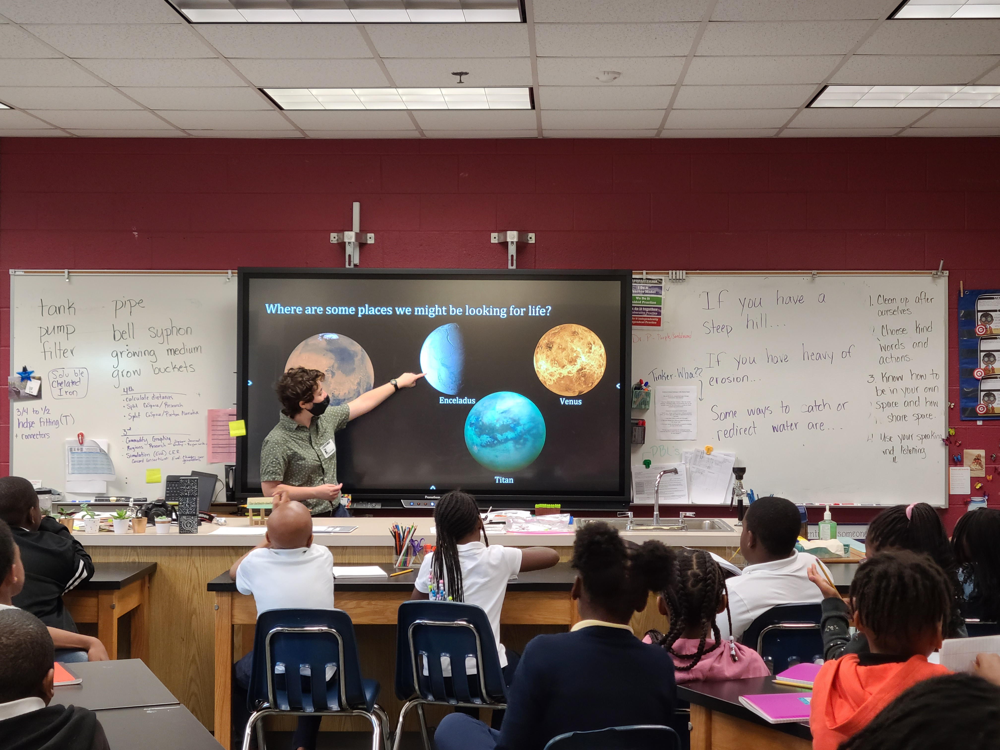

In my free time, I enjoy watching movies, knitting, taking walks, and sewing. I am also passionate about issues related to labor justice, especially as it concerns chronically and systemically low wages for graduate students in all fields of academia. As the graduate student represenative at the Physics and Astronomy Department's faculty meetings and the College of Arts and Sciences' Graduate Council meetings, and I have continually advocated for graduate students to recieve fair compensation and treatment. If you are interested in communicating further about this topic and how we have managed to secure some victories, please don't hesitate to contact me.
Feel free to shoot me an email at jfalcone2 [at] gsu.edu !
About Me
My Research
- Falcone, J., Crenshaw, D. M., Revalski, M., […]. Spatially Resolved, Multiphase Mass Outflows of the Seyfert 1 Galaxy NGC 3227”. Accepted for publication to The Astrophysical Journal. arXiv:2510.23000
- Tutterow, J., Ferree, N., Crenshaw, D. M., Falcone, J., et al. The Shape of AGN-driven Winds in the Seyfert Galaxy NGC 3516, 2025, ApJ, 990, 2.
- Revalski, M., Crenshaw, D. M., Polack, G., […] Falcone, J., et al. Quantifying Feedback from Narrow Line Region Outflows in Nearby Active Galaxies. V. The Expanded Sample, 2025, ApJ, 984, 1.
- Falcone, J., Crenshaw, D.M., Fischer, T.C., [...]. An Analysis of AGN-Driven Outflows in the Seyfert 1 Galaxy NGC 3227 , 2023, ApJ, 971, 17.
- Meena, B., Crenshaw, D. M., Schmitt, H. R., Revalski, M., [...] Falcone, J., et al. Investigating the Narrow Line Region Dynamics in Nearby Active Galaxies, 2023, ApJ, 943, 98.
- Revalski, M., Crenshaw, D. M., Rafelski, M., Kraemer, S., […], Falcone, J. Quantifying Feedback from Narrow Line Region Outflows in Nearby Active Galaxies. IV. The Effects of Different Density Estimates on the Ionized Gas Masses and Outflow Rates , 2022, ApJ, 930, 14.
- Falcone, J. Spatially-Resolved Multiphase, Multi-scale NLR Outflows in the Seyfert 1 Galaxy NGC 3227. Talk presented at ZIHUAGN Redemption: central kpc region, Zihuatanejo, Mexico, October 2025.
- Falcone, J. Resolving the AGN-Driven Gas Evacuation in the Seyfert 1 Galaxy NGC 3227. Talk presented at the 245th Meeting of the American Astronomical Society, National Harbor, MD, January 2025.
- Falcone, J. Analyzing the AGN-Driven Outflows in the Seyfert 1 Galaxy NGC 3227. Talk presented at the Space Telescope Science Institute Galaxies and AGN journal club, Baltimore, MD, November 2024.
- Falcone, J. Multiwavelength Analysis of the Outflows and Feedback Processes in the Seyfert 1 Galaxy NGC 3227. Talk presented at Galaxies at Crossroads: Outflows and IMF in the VLT/ELT/ALMA/JWST Era, Brno, Czech Republic, September 2024.
- Falcone, J., Crenshaw, D.M., Fischer, T.C., [...]. Multiwavelength Analysis of the Outflows and Rotation in the Seyfert 1 Galaxy NGC 3227. Talk given at the 243rd Meeting of the American Astronomical Society, New Orleans, LA, January 2024.
- Falcone, J., Crenshaw, D.M., Revalski, M., [...]. Disentangling Outflows and Rotation in the Star- Forming Seyfert 1 Galaxy NGC 3227. Talk given at AGN Winds on the Chesapeake, Easton, MD, June 2023.
- Falcone, J. , Crenshaw, D. M., Fischer, T., Meena, B., Revalski, M., Polack, G., Shea, M., Chapman, Z. (2022, June). An Analysis of AGN-Driven Outflows in the Seyfert 1 Galaxy NGC 3227. Poster presented at the 240th Meeting of the American Astronomical Society. The virtual poster is available to see here.
- Falcone, J. et al. 2021, E+A Galaxies in and Around Nearby Rich Clusters of Galaxies. RNAAS, 5, 3, 67.
- Falcone, J. et al. (2021, January.) E+A Galaxies In and Around Nearby Rich Clusters of Galaxies. Poster presented at the 237th Meeting of the American Astronomical Society.
The virtual poster is avaiable to see here.
+ co-author on seven other posters presented at this meeting

Some of the techniques I use in my research involve the reduction and analysis of the Kitt Peak Ohio State Multi-Object Spectrograph (KOSMOS) at Apache Point Observatory (APO), where I currently have over 150 hours of observing experience. I have significant experience with spectral fitting analysis, and have been contributing to a Gaussian fitting routine called BEAT since 2023. I currently help maintain the documentation.
My first paper was published in Summer 2024. It focuses on characterizing the kinematics of the ionized, warm molecular, and cold molecular gas observations for NGC 3227, which results in the determination of the biconical outflow orienation (pictured in the figure above) and a velocity law for the ionized outflows. You can find the link here, or you can read my summary of it here. I was also invited to speak about my paper on the Starts With a Bang podcast, and you can listen to that here.
My second study is an expansion of the first, still focusing on the outflows in NGC 3227. In this work, we quantify spatially-resolved mass outflow rates in three gas phases (cold molecular, warm molecular, and ionized) and apply it to the molecular gas reservoirs around the SMBH to estimate the evacuation timescales of the reservoirs. This study was published in January 2026 and you can read it here.
Refereed Publications
Other Publications, Posters, and Presentations
Outreach & Teaching

Since the summer of 2021, I have been a Graduate Lead in the Georgia Outreach Team for Space (or GOT Space), an outreach program affiliated with the Georgia Space Grant Consortium, the National Science Foundation, Georgia Institute of Technology, and a few other universities. As a lead organizer, some of my responsibilities include coordinating outreach events with educators, partaking in outreach events (which you can see in the image on the left!), and overseeing the content to be presented at outreach events. In 2024, GOT Space launched Astro on Tap Atlanta, which is a satellite of the broader Astro on Tap initiative. These monthly events bring in 50-75 adults from around the metro Atlanta to a local tavern to hear about astronomy, and has become the tavern's most popular recurring event.
GOT Space was awarded a $30,000 grant to host AsTropaLooza: An Astronomy of ATL Showcase, which was a 4-day event that occurred in June 2025. As a Co-I of this proposal, my primary responsibilities involved coordinating the various parties of volunteers and participating institutions, communicating with interested Atlanta-area educators, designing our publicity materials, and facilitating the activities themselves. We engaged hundreds of K-12 children over these events, and intentionally worked to make AsTropaLooza accessible to underserved communities by providing $100 rideshare vouchers upon request to several families.
I also have a passion for teaching, which I've been able to nurture during my time at GSU. I have TA'd a total of 15 introductory astronomy lab classes since my matriculation in Fall 2020, over which time I've been able to grow my skills as an educator, especially towards non-majors. Oftentimes, the quest for good grades can put students at odds with their physical or mental health, or with other obligations such as family care or work. I've spent a lot of time crafting policies for my lab classes that don't require students to make sacrifices, meaning they can prioritize their immediate needs and still succeed in the lab class.
For the Fall 2025 semester, I am the instructor of record for one class of ASTR 1010: Astronomy of the Solar System, and introductory class for non-majors. I chose to pursue this oportunity to further strengthen my pedagogical and organizational skills within an academic context, and as I move forward throughout my career, I intend to continue to learn and grow as an educator with an emphasis on accessibility for all.